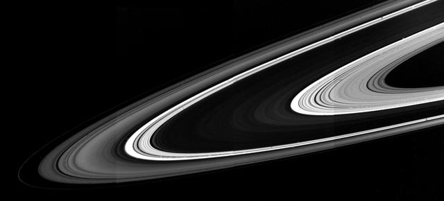
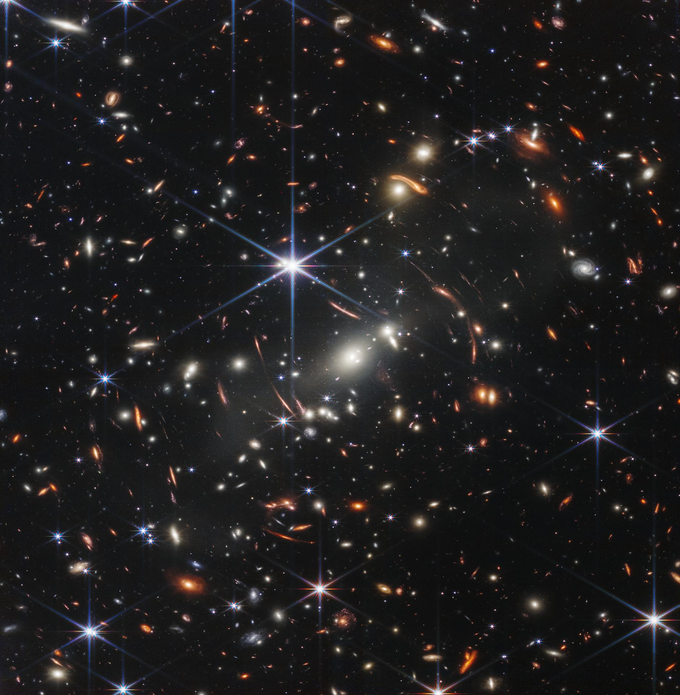
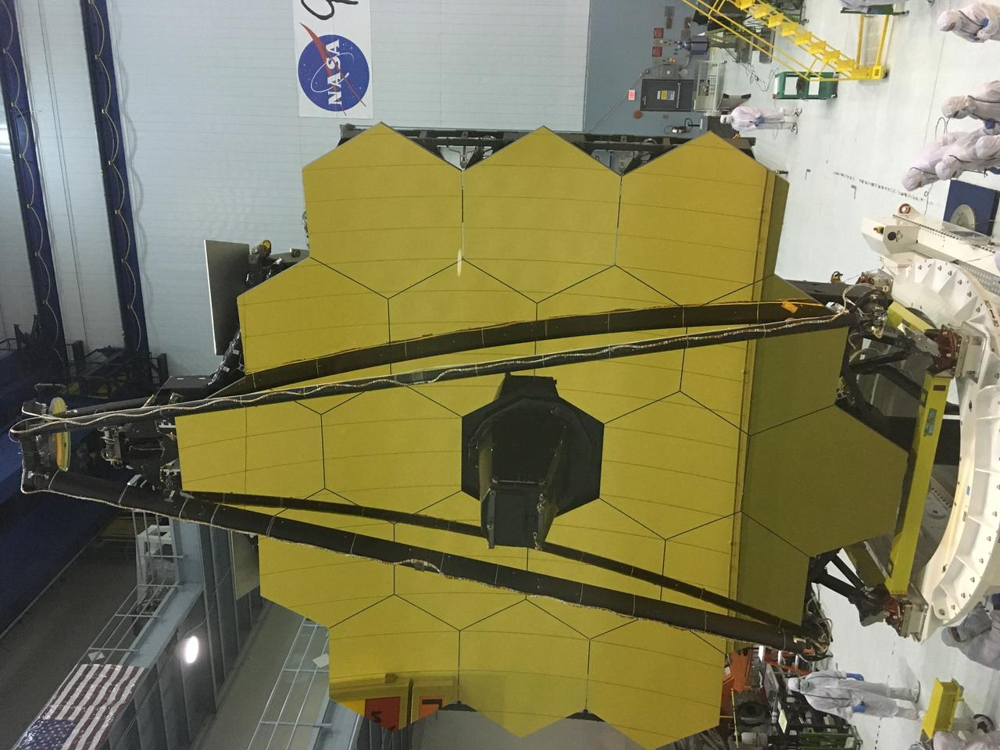

MÓDULO NASA
Órbita
Asteroides, datos
y movimiento
NovaQuest / Centro de descubrimiento

Exploración visual / Módulo 001
Una experiencia educativa para observar el sistema solar y conocer objetos cercanos a la Tierra.
Abrir visor interactivo ↗A / MISIÓN DISPONIBLE
NovaQuest conserva la identidad del proyecto colaborativo y presenta, por ahora, una sola ruta activa: el explorador orbital desarrollado por Kevin.
objetos NASA
por consulta

B / EXPERIENCIA ACTIVA

Asteroides, datos
y movimiento
C / PRÓXIMA EXPLORACIÓN